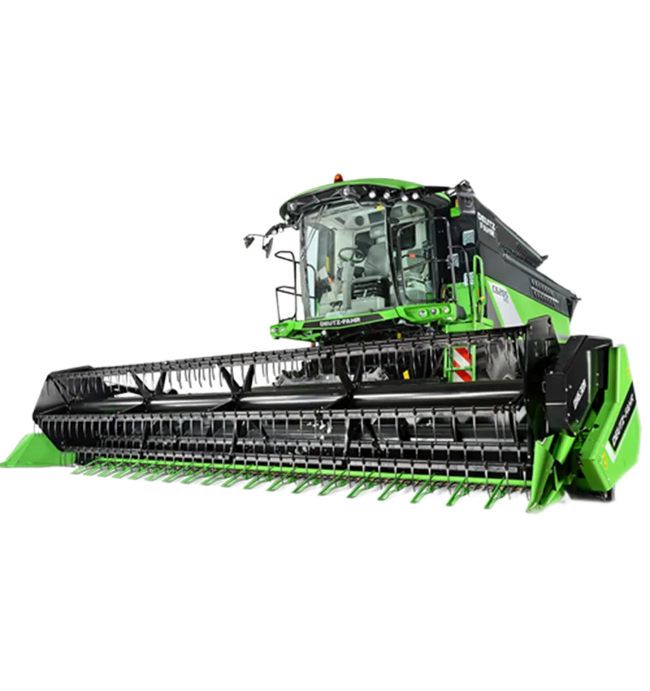

Комбайн Deutz-Fahr C6000

- Ширина жатки: до 6,3 м
- Объем зернового бункера: 7.000 л
- производительность выгрузки: 75 л/с
- Масса: 12.500 кг
- Мощность: 250 л.с.
Deutz-Fahr C6000 – это современный зерноуборочный комбайн, разработанный для высокой производительности и максимальной эффективности в любых условиях. Благодаря передовым технологиям и продуманной конструкции, он обеспечивает качественную уборку урожая с минимальными потерями и низкими эксплуатационными затратами.
Основные характеристики:
Особенности:
Мощный и экономичный двигатель с системой оптимизации расхода топлива, обеспечивающий стабильную работу даже при высоких нагрузках.
Высокопроизводительная система обмолота с надёжным барабаном для качественного отделения зерна.
Просторная кабина CommanderCab с панорамным остеклением, комфортным креслом и интуитивной системой управления.
Большой зерновой бункер объёмом 7000 литров позволяет минимизировать время на выгрузку и увеличить рабочую смену.
Современная система очистки и сепарации, обеспечивающая чистоту зерна и сокращение потерь.